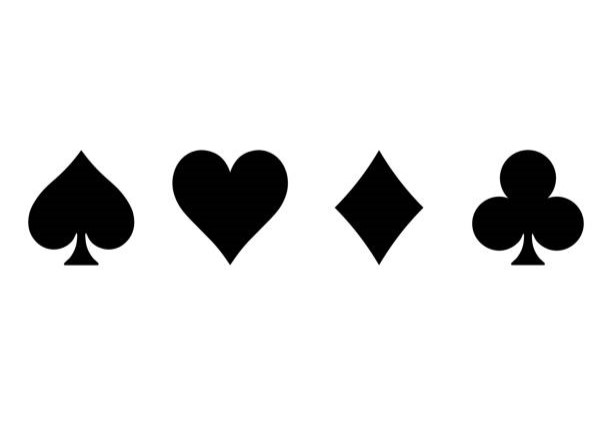

O objetivo de SETE E MEIO é fazer com que o valor total das suas cartas na mão seja o mais próximo possível de 7.5, do que as cartas da banca, sem ultrapassá-lo("estouro").
Antes das cartas serem distribuídas em uma rodada, o jogador deve apostar em sua mão. Depois, o jogador recebe sua primeira carta. A carta do jogador é sempre distribuída com a face para cima.
O jogador tem um turno onde pode optar por receber outra carta (Comprar), ou parar com a pontuação total que já possui
Assim que os turnos do jogador terminarem, a banca revelará suas cartas. O turno da banca tem uma estratégia fixa: se a pontuação for menor que a do jogador ou menor do que 6.5, a banca precisa comprar.
O jogador vencerá se sua pontuação ficar mais próxima do que a da banca, se tirar 7.5 ou se a banca estourar. Os jogadores perderão se estourarem, ou se a pontuação da banca estiver mais próxima de 7.5.
Cartas de número 2 a 7: valor da face.
Às: 1.
Rei: 0.5.
Dama: 0.5.
Valete: 0.5.
Se as duas primeiras cartas da mão do jogador forem um 7 e qualquer carta de valor igual a 0.5 (Rei, Dama ou Valete), o jogador tem um SETE E MEIO, porque suas cartas totalizam 7.5. Um SETE E MEIO é uma vitória automática, sem chances para a banca.
Após receber sua primeira carta, você terá duas opções:
A banca adiciona outra carta à sua mão.
Encerra sua rodada sem pegar outra carta, passando a vez para a banca.